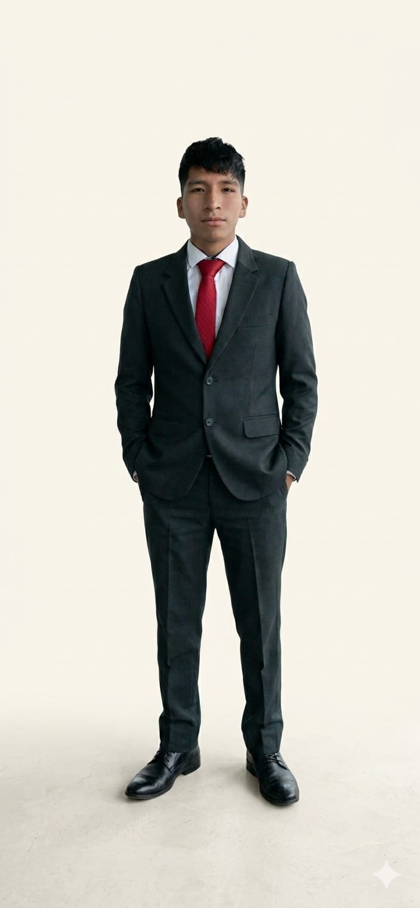

Sobre mí
Soy un estudiante de Ingeniería de Sistemas Informáticos, una carrera que exige lógica, concentración y muchas horas frente a la pantalla. Sin embargo, mi vida no se limita a los algoritmos y el desarrollo de software; encuentro mi verdadero equilibrio en el movimiento y la interacción social a través del deporte. Me considero un apasionado de la actividad física, desempeñándome en diversas disciplinas como el futsal, fútbol, voleibol y básquet. Para mí, estas no son solo competencias, sino una poderosa herramienta de relajación y distracción. En la intensidad de un partido, logro desconectarme del estrés académico y renovar mis energías.
Además, el deporte ha sido el puente principal para construir nuevas amistades. Creo firmemente en el valor del trabajo en equipo, tanto en un proyecto de programación como en la cancha. Esa misma energía y ritmo que disfruto en los deportes se traslada también a otra de mis grandes aficiones: bailar. El baile, al igual que el deporte, me permite expresarme y disfrutar del momento presente. En resumen, soy una persona que busca la integralidad: la precisión técnica de la ingeniería de sistemas combinada con la vitalidad, la sociabilidad y el bienestar que solo el deporte y el baile pueden brindar.
